01
Singing 01
Original text原来多年前在那个书店，借我课本的是你
Edited text原来多年前在那个书店，借我雨伞的是你
Original
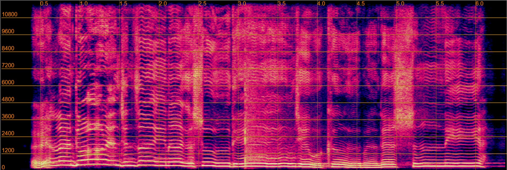
Model output
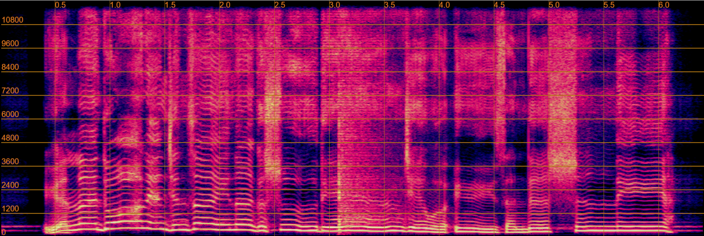
Audio Demo
Vocal editing in complex acoustic environments, including background music, transient interference, and continuous noise. Each example presents the original recording alongside the output produced by our model.
Original text原来多年前在那个书店，借我课本的是你
Edited text原来多年前在那个书店，借我雨伞的是你


Original text全世界都不说
Edited text全世界都沉默
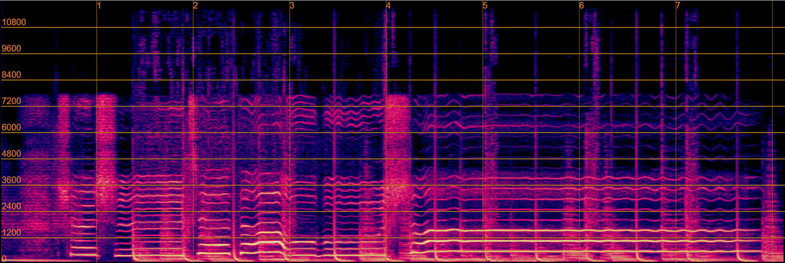
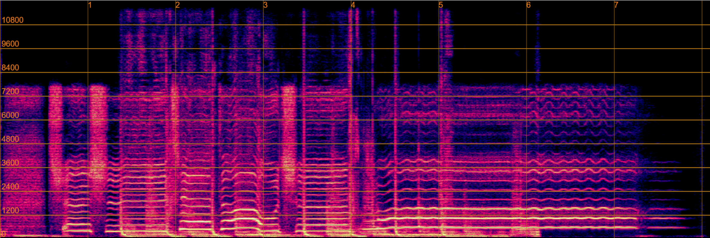
Original textThose were such happy times and not so long ago
Edited textThose were such sweet times and not so long ago
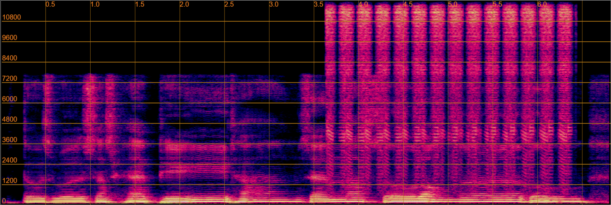
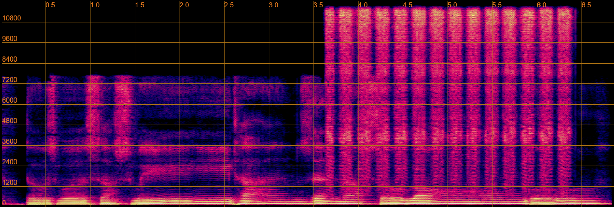
Original text曾经那样被看好的我们
Edited text曾经那样被看好的彼此
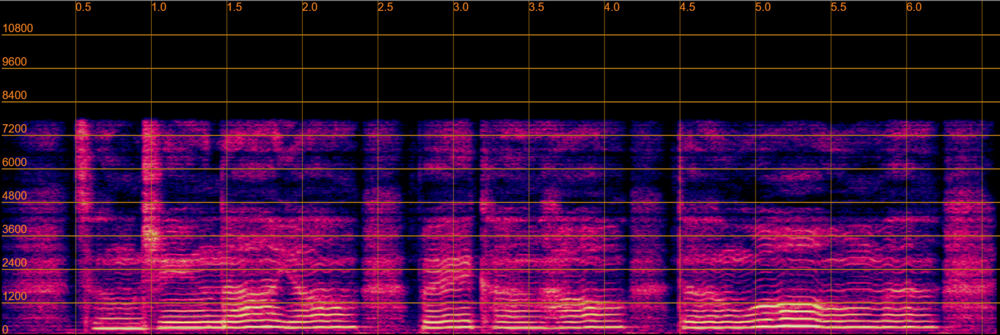
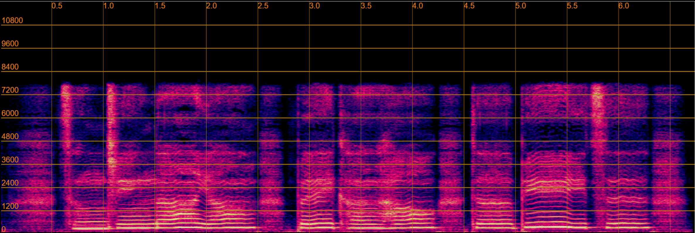
Original text你的酒馆对我打了烊，子弹在我心头上了膛
Edited text你的酒馆对我关了门，子弹在我心头上了膛
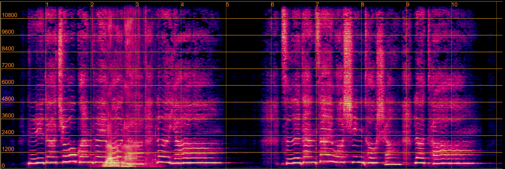
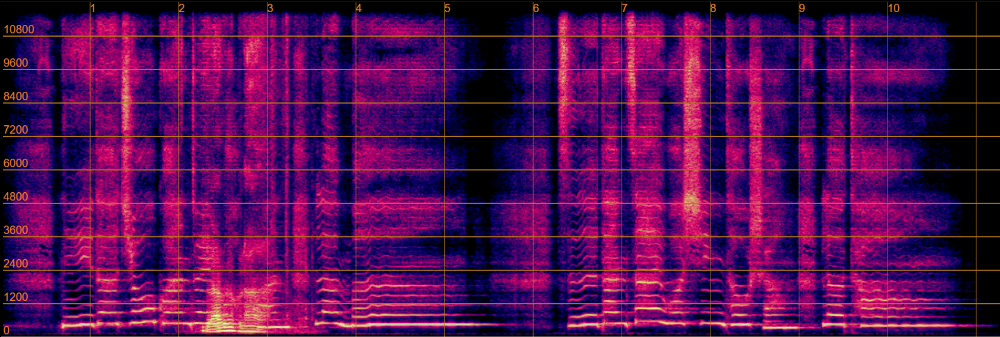
Original textWe might get some puppies, or owl eggs, or snake skins.
Edited textWe might get some kittens, or owl eggs, or snake skins.
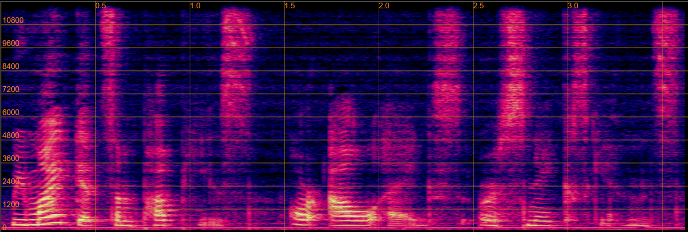
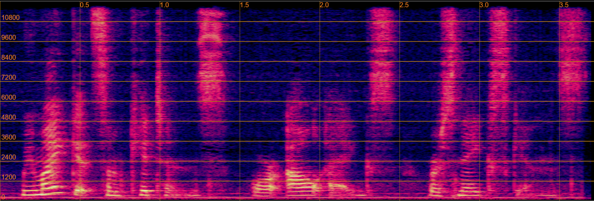
Original textHe was now the object of their anxiety, and whose absence was a black shadow between them and their happiness.
Edited textHe was now the focus of their anxiety, and whose absence was a black shadow between them and their happiness.
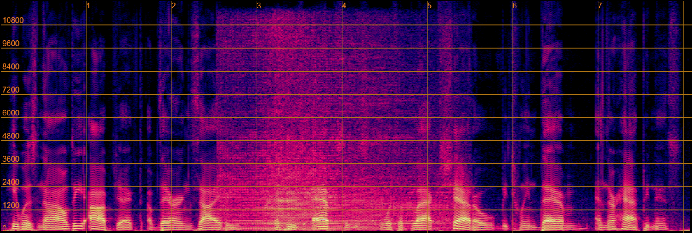
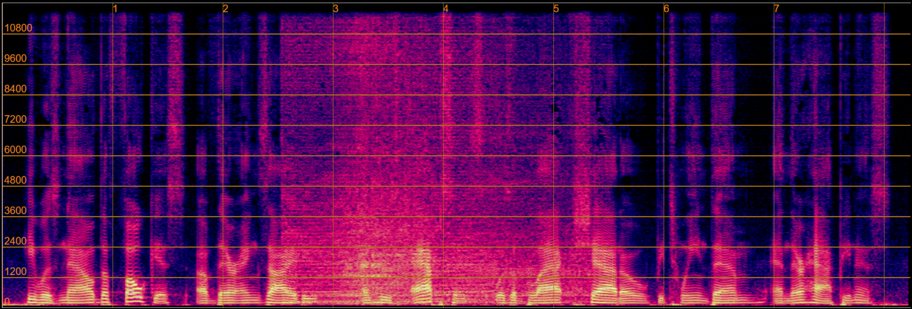
Original text通过组织动员和政策引导等多种途径
Edited text准备通过动员和政策引导等多种途径
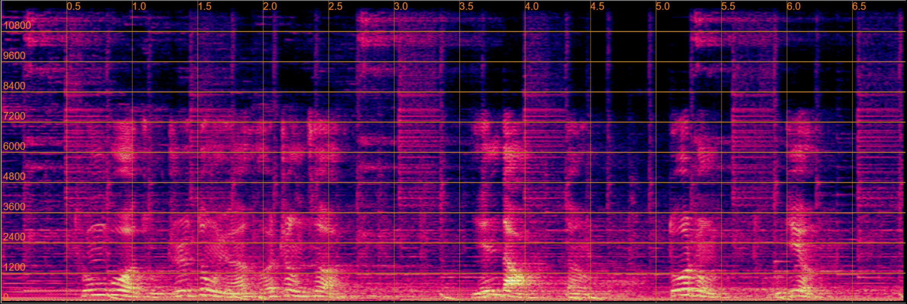
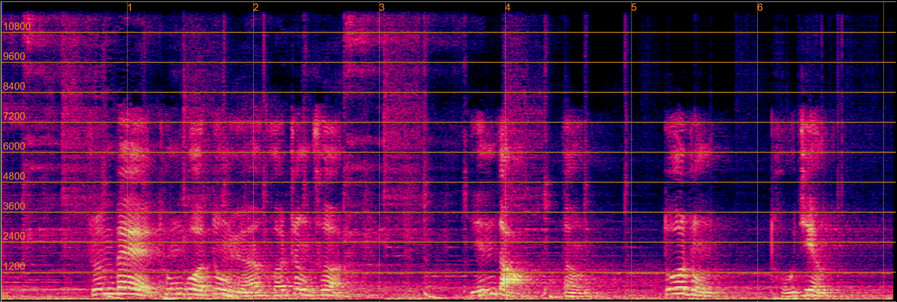
Original text就这个，指标的话就是，他是一个综合性的去考虑了很多评估指标之后加权平均的一个结果
Edited text就这个，最终得分就是，他是一个综合性的去考虑了很多评估指标之后加权平均的一个结果
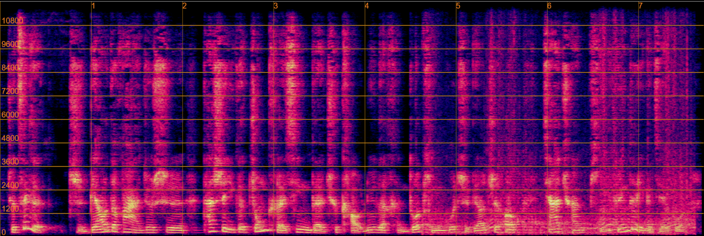
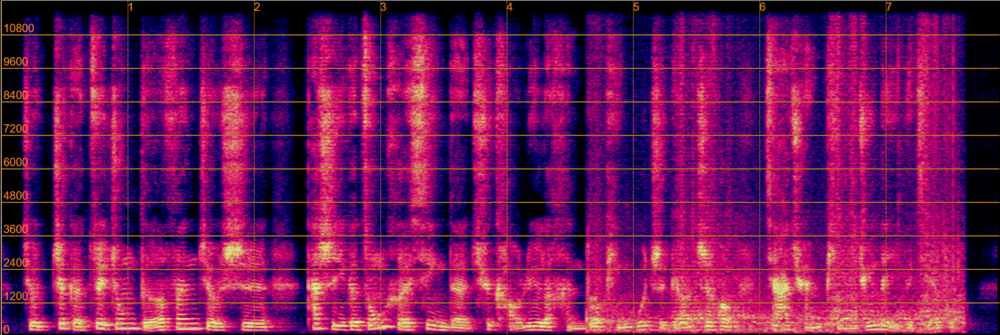